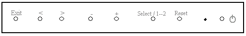

Operating Documentation
Direction 5133315-3, Rev# 14
Signa EXCITE HD 1.5T Service Methods
Module Version 1.0, Version Date 5/3/07
Operating Documentation |
| Required Persons | Preliminary Reqs | Procedure | Finalization |
|---|---|---|---|
| 1 | Not Applicable | Not Applicable | Not Applicable |
The intent of this section is to adjust the monitor to a "default" condition to proceed with calibrations.
Refer to Illustration 1 for Control locations.
Illustration 1: NEC 1880SX/1980SXi LCD FRONT PANEL OSM ACCESS BUTTONS

Refer to Table 1 for Control functions.
Table 1: OSM ACCESS BUTTON FUNCTIONS
| Exit | Exits the OSM controls, Exits the Main Menu. |
 | Moves Highlighted area left and right within the sub-menus. |
 | Moves bar left/right to increase or decrease adjustment. |
| Select / 1--2 | Enter OSM controls and sub-menus. Activates auto adjust function. |
| Reset | Resets the highlighted menu to the factory setting. |
 | On Off switch |
Refer to Table 2 for Monitor Adjustment Icons.
Table 2: Monitor Adjustment Icons
| Brightness/ Contrast Controls | |
 | Brightness |
| Contrast | |
| Black Level (Analog input only) | |
| Auto Contrast (Analog input only) | |
| Auto Brightness (Analog input only) | |
| Auto adjust Image Position H.Size V.Size Fine Settings (Focus) | |
 | Image Controls |
| Left/Right | |
 | Down/Up |
 | Horizontal Size, Vertical Size, (OSM Rotation Analog Input Only) |
To access On Screen Manager OSMTM, press one of these buttons: +,- ,<, >
| NOTE: | If the OSM Display turns off anytime during this procedure just touch one of the following buttons on the front panel: + - < > and resume the setup where you left off. All setting done prior, are saved automatically when the OSM display disappears. There is no need to repeat any steps. Resume the procedure where you left off. |
Auto Brightness and Screen Size Setup
Access the On Screen Manager OSMTM by pressing one of these buttons: + - < >
Press <>> 3 times to select ”Auto BRT” feature.
Press <–> or <+> button, turn OFF Auto Brightness setting. (If it is not already off).
Press <Exit> button
Press <>> to select “Auto” Adjust (Horizontal/Vertical positioning and focus).
Press <Select / 1--2> button.
Press <Select / 1--2> button again. LCD will auto adjust the following:
Horizontal refresh frequency
Vertical refresh frequency
Horizontal and Vertical Size adjustment.
Focus
Press <Exit> button.
This completes the Auto Brightness and Screen Size setup.
| NOTE: | Manual Adjustment of the Position Control and Image Adjust H. Size/Fine controls is rarely needed. Automatic adjustment takes care of this. |
Set Color Temperature to 9300
Access the On Screen Manager OSMTM by pressing one of these buttons: + - < >
Press <>> 3 times to select ”RGB” display.
Press <Select / 1--2> button.
Press <>> button to select option 1 (9300K for all monitor types except NEC1990sx. For the NEC 1990sx set to 5000K). (Monitor Color Temperature)
Select the <Exit> button
| NOTE: | Manual Adjustment of the Position Control and Image Adjust H. Size/Fine controls is rarely needed. Automatic adjustment takes care of this. |
Press the Exit Button. All adjustments are now saved. These settings will remain in effect even if power is removed, or system software is re-booted. Unless manually changed by the operator in the OSM , On Screen Manager. The LCD Display Monitor is now ready for integration to Signa.
Power off the monitor
Hold the <Select / 1--2> button as you power on the monitor
After the Brightness/Contrast menu appears, release the <Select / 1--2> button
Press the <Exit> button
Press the <>> button twice to move to tab 3 ( Auto Adjust Level)
Press the <Select / 1--2> button
Press the <+> or <–> buttons to select “OFF”
Press the <Exit> button twice to quit the monitor adjustment window.
Power the monitor off and then on to reset to the OSM.
No finalization steps.